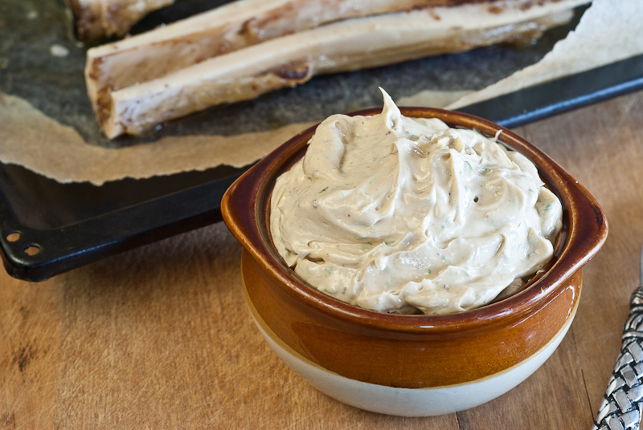

Bone Marrow Butter

Finished Product! Yum!
Bone Marrow Butter is a little exotic, a little decadent, and whole lot of
delicious yumminess packing an out-of-this-world nutritional punch. I’d
never imagined it, let alone tasted it, until a couple of weeks ago when I
was attending Monica Corrado’s Teacher Training at Sunrise Ranch, CO. Sous
Chef Ace Linne-Speidel brought it out at dinner our first evening there,
all while extolling the virtues of roasted marrow from grass-fed cows and
appreciating the depth and quality of grass-fed butter. As the week
progressed, he whipped his Bone Marrow Butter into mashed sweet potatoes
at lunch, spread it over grass-fed steaks with breakfast, and brought it
to the table for students to use with abandon on slices of homemade
sourdough.
Equipment
- Baking Sheet
- Parchment
- Sharp Knife
- Spoon
- Food Processor
Ingredients
- 8 marrow bones (cut to 2 inches)
- ½ cup of butter (softened)
- ¼ tsp sea salt
- ¼ tsp dried rosemary or thyme
- ¼ cup fresh parsley
Instructions
- Preheat oven to 425°F.
- Line a baking sheet with parchment paper.
- Spread the bones, marrow side up, on the baking sheet.
-
Bake in the preheated oven for 15-20 minutes or until the marrow in the
center of each bone is bubbly and soft all the way through.
-
Let marrow bones cool enough to be handled, then scoop out the marrow
into a food processor.
-
Add the softened butter, salt, rosemary or thyme, and fresh parsley to
the food processor.
- Blend until smooth.
- Use as you would butter and refrigerate leftover.